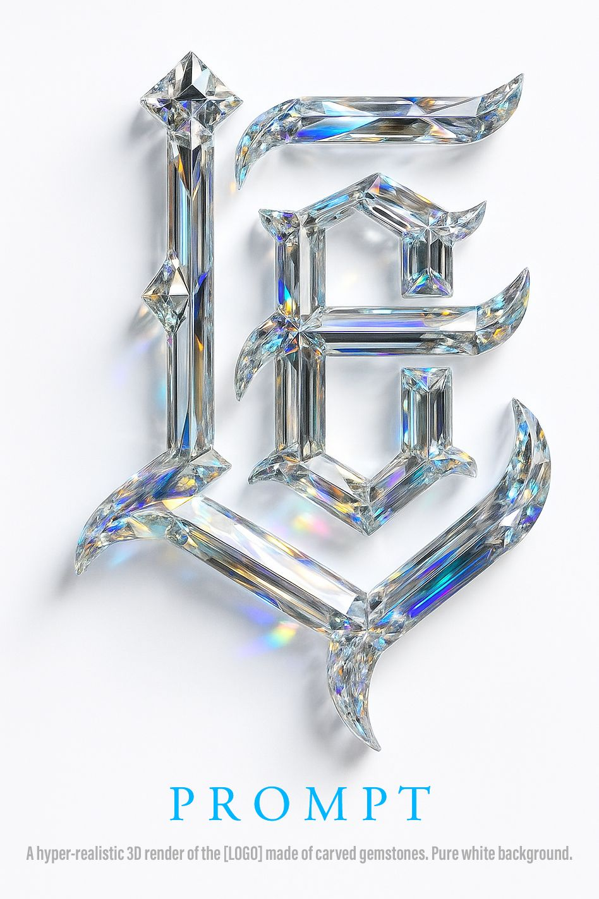

Hero letterforms generated as rendered objects — not typeset, sculpted. Decoded from a real reference card, then broken into parts you can recombine.
One pin. The whole method is printed on it.

Four slots. Everything else in this page is a fill for one of them.
The genre the model carves. Name it — the image won’t infer it.
The single highest-leverage clause. One phrase changes everything.
The reference uses the cheapest, most reliable pair. Change one at a time.
Your actual marks, already slotted. Copy, run, iterate one clause at a time.
The reference recipe, unchanged except the mark. Run this first — it is your control.
Mirror-finish reads as authority. Interlocked S/E keeps it a mark, not a word.
Iridescent titanium is the closest material to the stylism direction — metallic and oil-slick at once.
Blackletter plus obsidian is the culturally correct pairing here. Gloss carries it.
Diamond Cutz — brushed steel with a neon inlay reads as a physical shop sign, not a logo file.
Script ligature needs a viscous material to justify the continuous stroke. Molten gold does it.